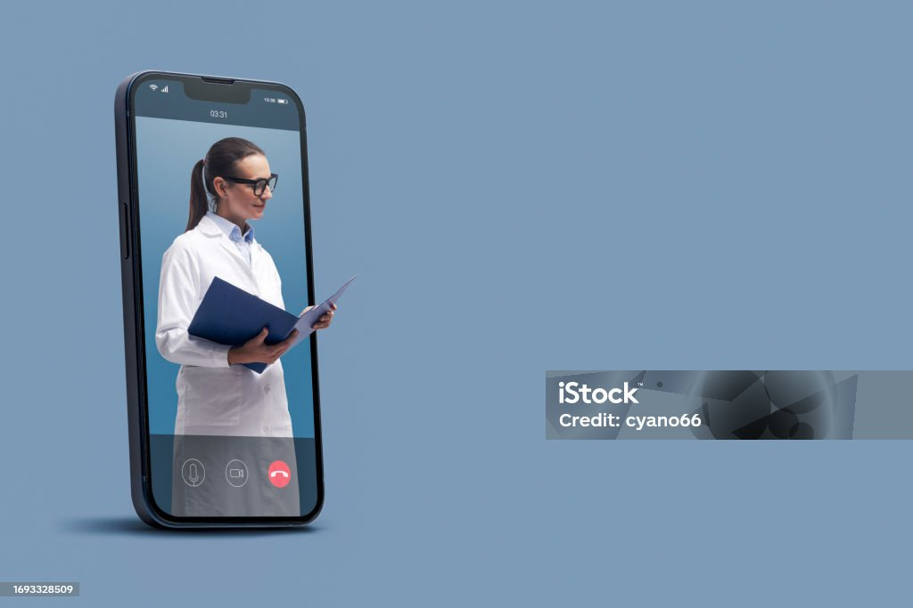

Телемедицина дозволяє лікарям надавати медичні послуги через відеоконференції та інші віддалені засоби зв'язку. Це особливо корисно для людей, які живуть у віддалених регіонах.
Що таке Телемедицина?
Телемедицина – це комплекс дій, технологій та заходів, що застосовуються під час надання медичної допомоги з використанням засобів дистанційного зв’язку для обміну інформацією. Крім цього, телемедичний напрям включає діджитал-освіту лікарів та пацієнтів, медичні інформаційні послуги та самообслуговування через цифрові комунікаційні технології.
Як сьогодні телемедичні технології роблять медичні послуги доступнішими
- 🔷 Телемедицина допомагає зв’язати не тільки пацієнта та лікаря, але й надає можливість лікарям спілкуватися, навчатися та обмінюватися досвідом.

- 🔷 Наразі перспективним напрямком у телемедицині є телеконсультації у віддалених містах та селах, за допомогою яких фахівці можуть надавати профільні рекомендації колегам та консультувати пацієнтів.
- 🔷 Учора пройшов Всесвітній день боротьби з цукровим діабетом. З цієї нагоди пропонуємо розглянути, як сьогодні телемедичні технології у світі можуть допомогти пацієнтам, до прикладу, з цукровим діабетом. Зазвичай, пацієнти з таким діагнозом мають вдома свій глюкометр. Проаналізувавши аналіз крові за допомогою пристрою, можна сповістити лікаря зручним засобом зв’язку про результати та домовитись з ним про відео-консультацію. Впродовж відео-консультації пацієнт може отримати відповідні рекомендації та характеристику свого стану здоров’я. Після консультації лікар може скласти відповідні призначення та надіслати їх пацієнту.
- 🔷 Сервіси, що впроваджуються в електронній системі здоров’я в Україні, також допомагають зробити медичні послуги більш доступними. Так, електронний рецепт значно спрощує процес виписки та отримання препаратів інсуліну.
- Пацієнт може звернутися до ендокринолога для створення індивідуального плану лікування в електронній системі охорони здоров’я.
- Перший е-рецепт на інсулін виписує лікар-ендокринолог, який приймає амбулаторно.
- Повторний рецепт зможе також виписати сімейний лікар. До кого звертатись за повторним рецептом – пацієнт обирає самостійно.
- 👉🏻 Таким чином, електронний інструмент усуває необхідність для пацієнта, що проживає у віддаленій місцевості, часто їздити до лікаря для отримання рецепта або консультації.